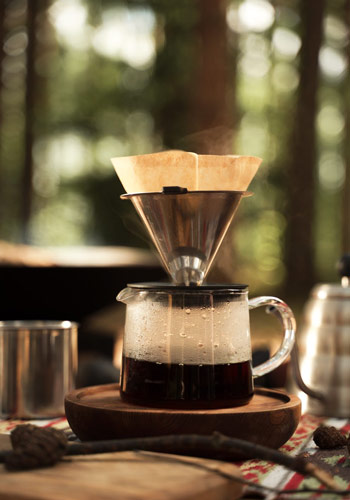

| Le café moulu est la forme de café la plus consommée actuellement. Également appelée mouture, elle résulte du broyage de grains de café torréfiés. | |
|---|---|
|  |
Le café moulu est la forme de café la plus consommée actuellement. Également appelée mouture, elle résulte du broyage de grains de café torréfiés et donc réduit sous forme de poudre, avec une finesse plus ou moins conséquente. Le café en poudre est le format le plus commercialisé dans les grandes surfaces. Il existe une large gamme de choix, allant d’un café premier prix aux cafés plus spécifiques et de marques plus connues. Mais il est tout à fait possible de moudre le café par vous-même, à l’aide d’un moulin manuel ou électrique. Et ainsi, garder le maximum de fraîcheur et de saveur. La préparation du café moulu peut se faire de plusieurs façons. Avec une cafetière filtre, une machine expresso ou une cafetière italienne. Mais chaque type d’appareil nécessite un café moulu et une taille de mouture spécifique. |